Chapter 4 : Set Notation Representation And Probability (Continued)
4.5 Relation Between Sets
4.5.1 Universal Set
For all problems, there exists a fixed set which called the Universal Set. This is the largest set which contains all related items.
The Universal Set is denoted by U or $\xi$.
4.5.2 The Null or Empty Set
The sets that we discussed above contain at least one element. There are some sets that do not contain any element at all. We call them the null or empty set.
The Empty Set is denoted by $\varnothing$ or a pair of empty brackets { }.
Examples of null set are:
- The set of pupils in your class who are less than 12 years old.
- The set of months with 12 days.
- The set of cats in Singapore with four tails.
- The set of cars with 68 doors.
4.5.3 The Finite and Infinite Set
Question: How many elements are there in the set of English Letters?
Answer: 26 letters i.e. a..z
If we let E be the set of all English Letters, then the number of element in this set E is 26, and we write as n(E) = 26.
In most of the cases, we are able to tell the number of elements in a set, but however, there might have cases which we cannot give an exact figure. For example, the set of even number, the set of prime number that are more than 10 etc.
Definition: A set which contains a definite number of elements is called a finite set.
A set which has infinite number of elements is called an infinite set.
4.5.4 Subset
A set P is a subset of a set Q if every element of P is also element of Q, we write $P \subseteq Q$.
Example:
So, $A \subseteq B \subseteq U$
U
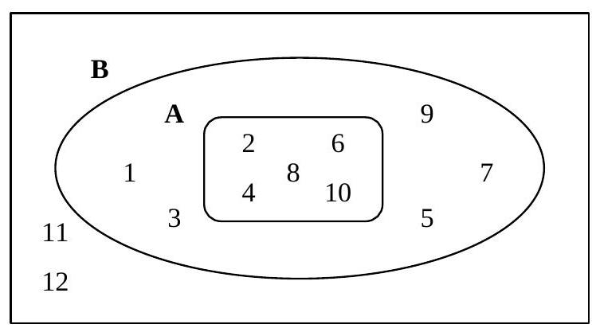Figure 4-2
Facts
- $A = B \Leftrightarrow A \subseteq B$ and $A \supseteq B$
- The empty set is a subset of every set.
4.5.5 Complement
The complement of the set A is the set of elements which are not in A, denoted by $\overline{A}$ or A'.
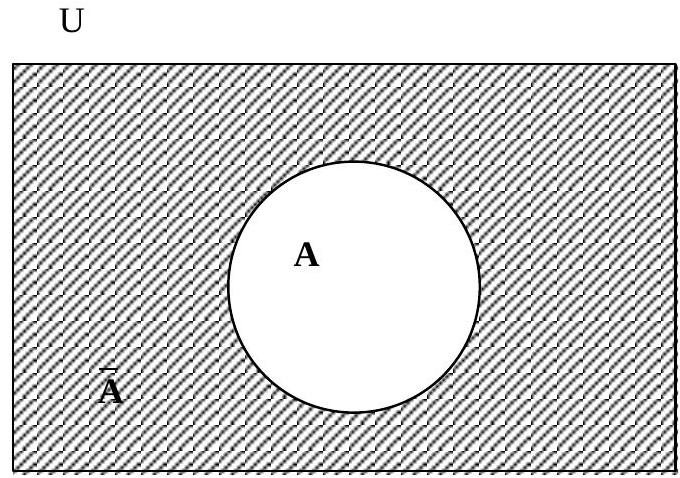Figure 4-3
Examples:
If $U = \{1, 2, 3, 4, 5, 6, 7, 8, 9, 10\}$, and $A = \{1, 3, 5, 7\}$
then $\overline{A} = \{2, 4, 6, 8, 9, 10\}$
If U is the set of real numbers, and A is the set of all negative real numbers then $\overline{A}$ is the set of all non-negative real numbers (including zero).
Facts
- The complement of the universal set is the empty set. ($\overline{U} = \varnothing$)
- The complement of the empty set is the universal set. ($\overline{\varnothing} = U$)
- The complement of $\overline{A}$ is A ($\overline{(\overline{A})} = A$)
4.5.6 Union
The union of two sets, A and B, is the set of all elements of A and/or B, we write $A \cup B$. i.e. $A \cup B = \{x : x \in A \text{ or } x \in B\}$
U
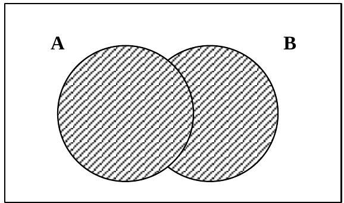$A \cup B$
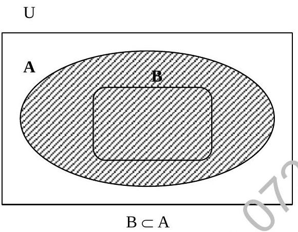U
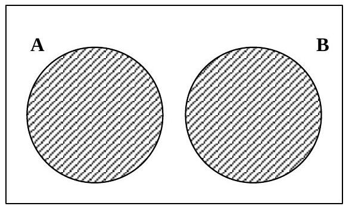Disjoint Set
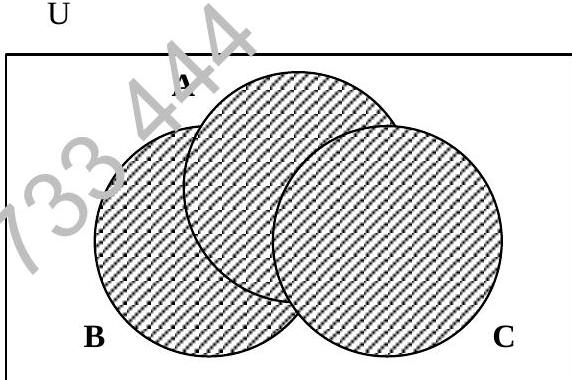$A \cup B \cup C$
Figure 4-4
Example: If $A = \{1, 2, 3, 4\}$ and $B = \{1, 2, 5, 6\}$ then $A \cup B = \{1, 2, 3, 4, 5, 6\}$
U
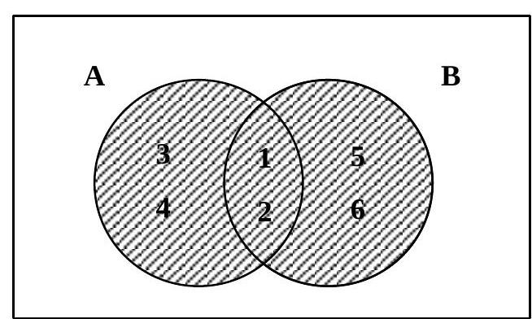Figure 4-5
4.5.7 Intersection
The intersection of two sets A and B is the set of elements which belong to both A and B, we write $A \cap B$.
i.e. $A \cap B = \{x : x \in A \text{ and } x \in B\}$
U
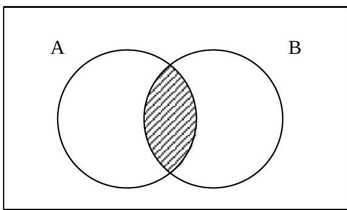$A \cap B$
U
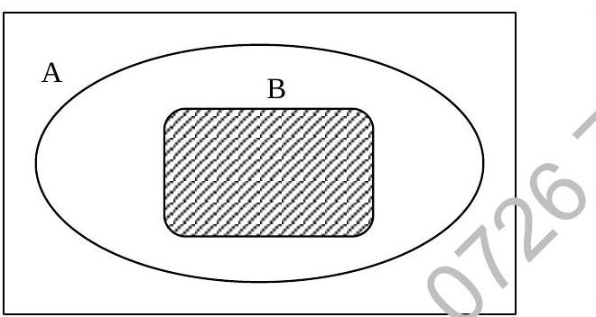$B \subset A \implies A \cap B = B$
U
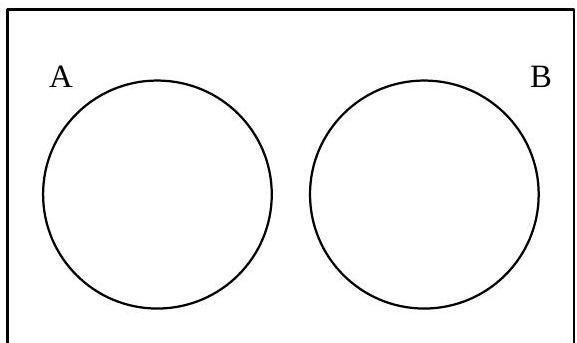Disjoint Set
$A \cap B = \varnothing$
U
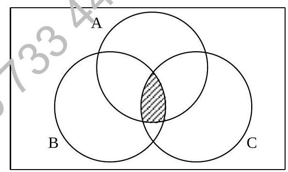$A \cap B \cap C$
Figure 4-6